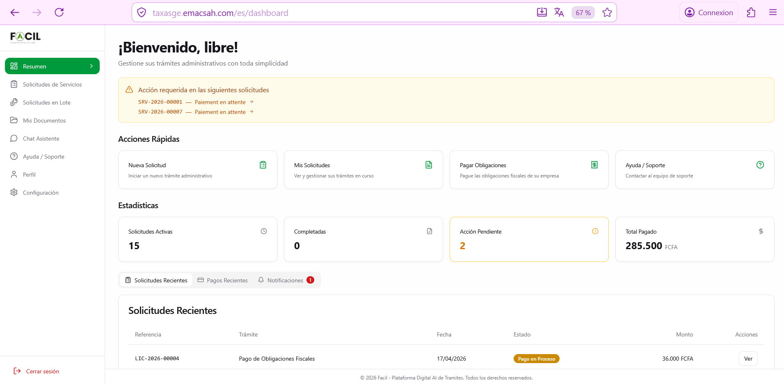

Su panel principal en Facil Web
Después de iniciar sesión, llega a su panel principal: el centro neurálgico desde el cual sigue todas sus solicitudes, gestiona sus documentos y accede a los servicios. Esta página describe cada elemento de la pantalla.
1. Acceder al panel
El panel principal se muestra automáticamente después de iniciar sesión. Si aún no tiene cuenta, consulte la página Crear cuenta.
URL directa: https://taxasge.emacsah.com/dashboard (redirige al inicio de sesión si no está autenticado).
2. Estructura general de la pantalla
El panel se divide en 3 zonas principales:
- Menú lateral izquierdo — todas las secciones disponibles para usted (Resumen, Solicitudes, Documentos, Chat, Soporte, Perfil, Configuración). Se mantiene visible en todas las páginas.
- Cabecera superior — contiene el ícono de notificaciones (con un punto rojo si tiene mensajes no leídos), el selector de idioma, y el menú de su perfil.
- Zona principal — muestra el contenido de la sección actual (por defecto: el «Resumen» con sus estadísticas y solicitudes recientes).

3. Cartas de estadísticas
En la parte superior de la zona principal, cuatro cartas resumen el estado de su cuenta:
| Carta | Significado | Acción al pulsarla |
|---|---|---|
| Solicitudes activas | Trámites iniciados, aún no finalizados (en cualquier estado : borrador, enviada, en proceso, en revisión, en pago, esperando cita). | Va a la pestaña «Mis Solicitudes» filtrada en activas. |
| Solicitudes completadas | Trámites finalizados con éxito. | Va a «Mis Solicitudes» filtrada en completadas. |
| Pendientes de acción | Solicitudes que esperan algo de usted (pago, documento, confirmación de cita, respuesta a una pregunta del agente). | Va a «Mis Solicitudes» filtrada en pendientes — corresponde al banner naranja de «Acciones requeridas». |
| Total pagado (XAF) | Suma de todos los pagos validados durante el año en curso. | Va a «Mis Pagos» con el desglose detallado. |
4. Banner «Acciones requeridas»
Si tiene solicitudes esperando una acción de su parte, un banner naranja aparece arriba del panel. Lista cada solicitud bloqueada con su número de referencia (ej : SRV-2026-00001) y el motivo del bloqueo.
Tipos de acciones requeridas
- Pago pendiente — debe pagar la tasa antes de que la solicitud pueda procesarse.
- Documentos faltantes — el agente le pidió aportar un documento adicional.
- Cita por confirmar — debe seleccionar una fecha de cita.
- Pregunta del agente — el agente le pidió una aclaración o documento.
5. Pestañas (Solicitudes, Pagos, Alertas)
Debajo de las cartas de estadísticas, tres pestañas le permiten alternar entre vistas:
Pestaña «Solicitudes Recientes»
Muestra sus 10 solicitudes más recientes con: referencia, tipo, estado, fecha de creación, progreso (barra de %). Pulsando una línea, accede al detalle. Para ver todas, vaya a Mis Solicitudes.
Pestaña «Pagos»
Lista los pagos realizados o pendientes, con estado, importe en XAF, método (Dinero Móvil, Tarjeta, Transferencia, Efectivo, Cheque) y referencia. Detalle completo en Mis Pagos.
Pestaña «Alertas»
Notificaciones recientes (cambios de estado, mensajes de agentes, alertas de vencimiento de documentos). Pulsando una alerta, accede al elemento concernido.
6. Acciones rápidas (sidebar)
El menú lateral izquierdo contiene 8 entradas principales:
| Entrada | Función | Página manual |
|---|---|---|
| Resumen | Vista actual (este panel) | — |
| Solicitudes Servicios | Lista completa de sus solicitudes | Mis solicitudes |
| Solicitudes en Lote | Crear varias solicitudes a la vez (Excel) | Solicitudes en lote |
| Mis Documentos | Caja fuerte digital de sus documentos | Mis documentos |
| Chat Asistente | Asistente IA conversacional | Asistente IA |
| Ayuda / Soporte | Crear y consultar tickets de soporte | Soporte |
| Perfil | Sus informaciones personales | Su perfil |
| Configuración | Seguridad (contraseña, 2FA), notificaciones | Seguridad |
7. Versión móvil equivalente
La aplicación móvil ofrece un panel similar pero adaptado a la pantalla pequeña. Detalle completo en la página Panel principal Móvil.
| Función | Web | Móvil |
|---|---|---|
| Cartas de estadísticas (4) | ✅ | ✅ (compactadas) |
| Banner acciones requeridas | ✅ | ✅ |
| Pestañas (Solicitudes/Pagos/Alertas) | ✅ | ✅ |
| Menú lateral persistente | ✅ | ❌ (menú hamburguesa) |
| Notificaciones push | ❌ (web push solo) | ✅ (FCM/APNs) |
| Acceso biométrico (huella/cara) | ❌ | ✅ |